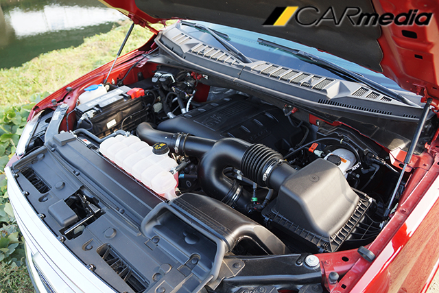

이것이 진짜 '픽업트럭', 포드 F-150 슈퍼크루캡

【카미디어】 윤지수 기자 = 우리나라에서 ‘트럭’은 '상용'일 뿐이다. 그래서 덜컹거리고 시끄러우며 매캐한 매연이 떠오른다. 한 마디로 '먹고살기 바쁜 차'다. 반면 미국에서의 트럭은 사뭇 다르다. 그들의 트럭, 특히 픽업트럭엔 '레저·스포츠'가 묻어 있다. 그래서 터프하고 여유로우며 멋지다. 미국에선 이런 픽업트럭이 가장 많이 팔린다. 우리나라에서 SUV가 한창인 것처럼, 미국에서는 수년동안 '픽업트럭'이 대세다. 이런 픽업트럭 중 가장 많이 팔리는, 아니 미국에서 어떤 차보다도 가장 많이 팔리는 차, 포드 F-150을 시승했다. 아래는 함께 시승했던 장진택 기자의 시승 영상이다.
F-150의 겉모습은 두말할 것 없다. 크다. 가슴 높이까지 올라온 두툼한 보닛과 거의 6m에 달하는 차체를 보고 있노라면, 어젯밤 주차하면서 흘린 ‘진땀’이 잊힐 정도로 뿌듯하다. 거대한 라디에이터 그릴과 세로로 긴 헤드램프, 그리고 큼직한 사이드 미러는 마치 영화 속 미제 트레일러를 보는 것처럼 든든하다.

그런데 이런 ‘무식한’ 차가 자세히 보면 세련된 구석이 많다. LED 주간주행등과 LED 방향지시등은 기본이고, LED 헤드램프까지 달려 있다. 덕분에 상용차처럼 크고 굵직하지만, 상용차와는 다른 분위기다. 게다가 최고급 세단에나 쓰일법한 알루미늄으로 차체를 만들었다고 하니, 상용차처럼 단순하게만 만든 차가 아닌 건 확실하다.
문을 열면 숨어있던 발판이 내려온다. 이제껏 많은 차를 시승했지만, 이토록 ‘쓸모’있는 발판은 처음이다. 다른 차들은 발판이 있어도 무시하고 발을 들이밀게 되지만, 이 차는 자연스럽게 발판에 먼저 발이 간다. 멋이 아닌 진짜 필요해서 만든 발판이다.
높다란 좌석에 앉으면, SUV가 아니라 진짜 트럭에 올라탄 기분이다. 눈높이가 거의 버스 운전기사와 맞먹을 정도다. 예전 운전병 시절 탔던 군용 ‘닷지(K311)’ 트럭보다도 높이가 높다. 높은 눈높이 덕분에 큰 차체에 대한 부담이 적다. 게다가 사이드미러도 넉넉하다.

실내도 겉모습처럼 두말할 것 없다. 넓다. 운전자와 동승자가 웬만해선 닿지 않을 만큼 멀리 떨어져 있고, 뒤쪽은 세 명의 성인 남성이 어깨를 부딪히지 않아도 된다. 특히 뒷좌석 공간이 우리가 알고 있는 ‘픽업트럭’과 다르다. 등받이가 여유롭게 누워있고, 무릎 공간도 넉넉하다. 성인 다섯 명이 장거리 여행을 떠나도 편안할 것 같은 공간이다. 전체적인 실내의 만듦새는 최신 포드 차답게, 치밀하진 않지만 제법 차분하게 마감돼 있다.
왠지 키를 돌려 시동을 걸어야 할 것 같지만, F-150은 버튼만 누르면 시동이 걸린다. 그런데 기대했던 ‘둥둥둥’이나 ‘부르릉’ 소리가 없다. 그저 차분하고 조용한 엔진 소리만 들린다. 진동도 거의 없다. 가속페달을 밟아도 그저 차분하게 속도를 높일 뿐이다. 우리가 아는 디젤 픽업트럭이 아닌 가솔린 픽업트럭 다운 모습이다.
가속페달을 끝까지 밟으면, 덩치에 어울리지 않게 호쾌하게 속도를 붙인다. <카미디어>가 측정한 정지 상태에서 시속 100km까지 걸리는 시단은 7.3초. 웬만한 대배기량 세단만큼 빨랐다. 365마력의 최고출력과 58.0kg.m의 최대토크를 내는 V형 6기통 3.5리터 엔진은 이 ‘덩치’를 이끄는데 충분했다.
F-150을 시승하며, 가장 인상 깊었던 부분은 승차감이다. 당연히 ‘덜컹’거릴 걸로 기대했는데, 예상은 빗나갔다. F-150은 낭창낭창한 서스펜션과 묵직한 차체가 만나 여유롭게 도로 위를 미끄러졌다. 뒤쪽에 ‘판스프링’이 달린 트럭의 승차감이라곤 믿기지 않을 정도의 승차감이다. 여유로운 힘으로 부드럽게 미끄러지는 모습이 장거리 주행이 많은 미국차 답다.
하지만 속도를 내기 시작하면 ‘편안함’은 ‘불안함’으로 돌변한다. 2m에 달하는 높이에 걸맞게 양옆으로 휘청이고 차체는 출렁인다. 엔진은 빠른 주행에 적합할 정도로 강력하지만, 서스펜션과 차체는 편안함에 초점을 맞추고 있다. 역시 이 차는 ‘달리라고’ 만든 차가 아니다. 그저 쭉 뻗은 길을 여유롭게 달리는 차다. 강력한 엔진도 ‘여유롭게’ 달리기 위해 들어갔다.
간단한 (4륜을 넣을 필요도 없는) 험로도 달렸다. 낭창낭창한 서스펜션은 험로에서도 빛났다. 험로에서 신경질적으로 덜컹거리는 국산 프레임 방식 SUV나 픽업트럭과 달리 차분하게 휘청거린다. 덕분에 험로에서도 여유롭다. 다만 이런 길에서 속도를 높이면, 너무 흔들거려서 더 불안하긴 하다.
시승차를 반납하고 돌아오는 길, 국산 준중형차에 몸을 옮기자, 갑자기 긴장이 ‘탁’ 풀린다. F-150을 타는 동안은 그저 편안하게만 느껴졌지만, 역시 큰 차를 몰면서 나도 모르게 적잖이 긴장하고 있었던 것 같다. 도로를 달리면서 사이드미러로 차가 중앙에 있는지 확인해본 것도 운전병 시절 ‘육공트럭(K511)’ 이후로 처음이다. 물론 익숙해지면 나아지겠지만, 역시 우리나라 도심을 달리기엔 좀 부담스럽긴 하다. 참고로 F-150의 크기는 길이 5,890mm, 너비 2,080mm, 높이 1,950mm다.
시승차는 F-150 중에서도 윗 등급에 속하는 플래티넘 모델이다. 지금 우리나라에 정식 수입되고 있지는 않으며, 직수입으로만 판매되고 있다. 직수입 가격은 등급에 따라 4,500만원~7,000만원 선이다. 시승차인 플래티넘은 6,600만원 선이다. 최근 한 업체에서 공격적인 가격으로 F-150을 들여오면서 정식 수입만큼 매력적일 정도로 가격이 낮아졌다.
F-150은 예상외로 훌륭했다. ‘포드가 이렇게 차를 잘 만들었나’라는 생각이 머릿속에 스쳐 지나갔다. 강인한 겉모습과 넉넉한 출력은 ‘상남자’ 다운 매력이 넘쳤고, 부드러운 승차감과 여유로운 실내는 ‘따뜻한 남자’의 매력을 풍겼다. 지난날 현대차가 싼타페를 출시하며 외쳤던 ‘스트롱 아웃사이드, 소프트 인사이드’라는 카피가 이 차에 제대로 들어맞는 것 같다. 미국에서 33년간 가장 많이 팔린 데는 다 그만한 이유가 있었다.